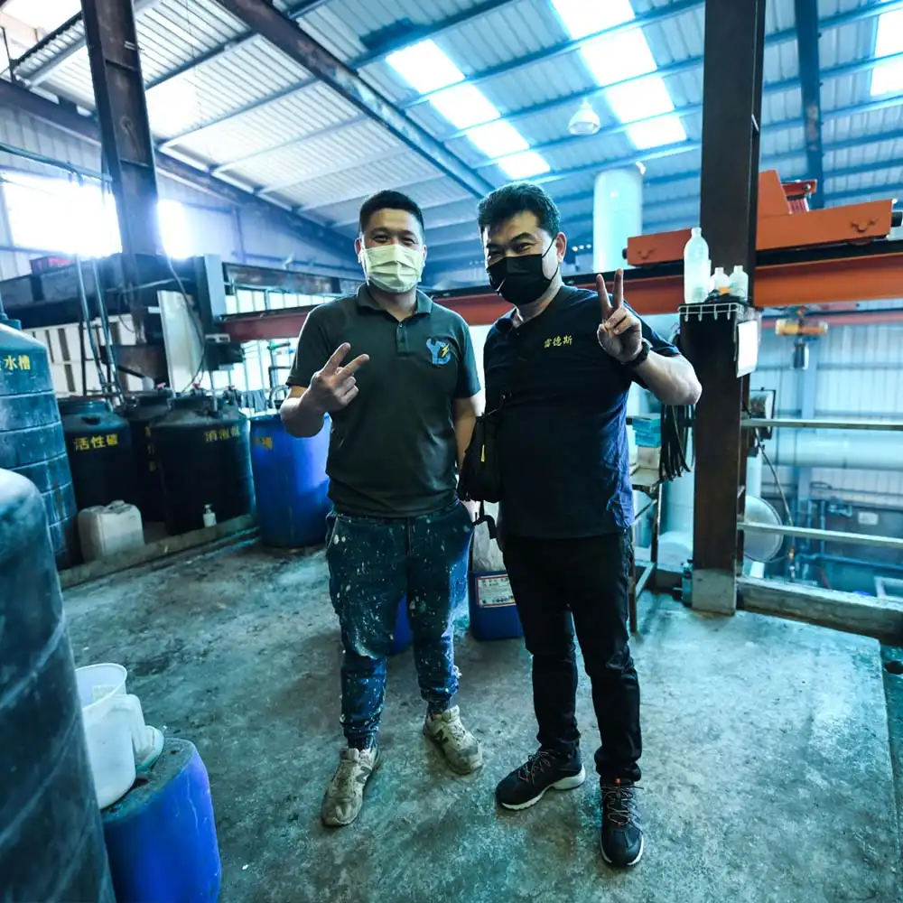
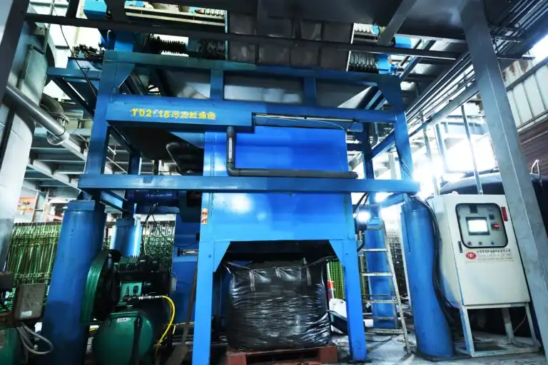
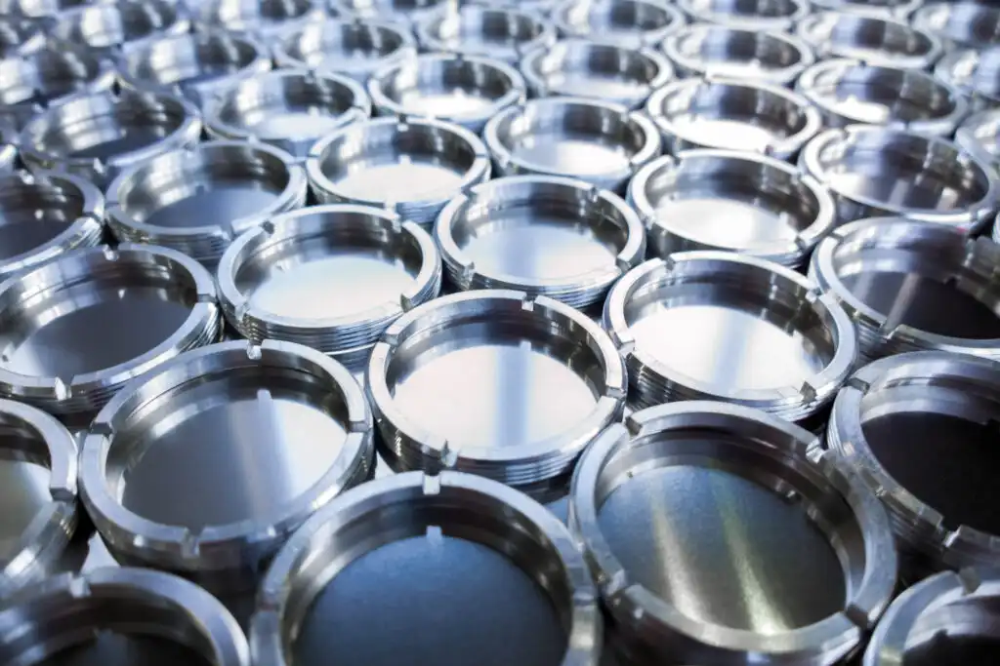
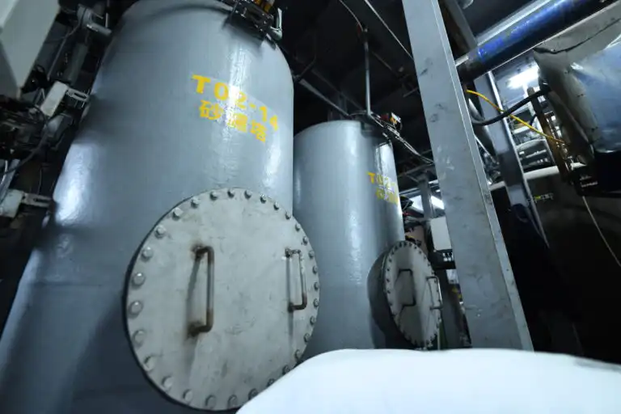

<!DOCTYPE html>
<html lang="zh-TW">
<head>
    <meta charset="UTF-8">
    <meta name="viewport" content="width=device-width, initial-scale=1.0">
    <title>台灣雷德斯減廢科技股份有限公司 | Taiwan Raiders Waste Reduction Technology Corp.</title>
    
    <!-- 引入 Tailwind CSS 與相關庫 -->
    <script src="https://cdn.tailwindcss.com"></script>
    <script src="https://unpkg.com/react@18/umd/react.production.min.js"></script>
    <script src="https://unpkg.com/react-dom@18/umd/react-dom.production.min.js"></script>
    <script src="https://unpkg.com/@babel/standalone/babel.min.js"></script>
    <script src="https://unpkg.com/lucide@latest"></script>

    <script>
        tailwind.config = {
            theme: {
                extend: {
                    colors: {
                        'trt-blue': '#0F172A',       // 科技深藍 (Slate 900)：沉穩、權威
                        'trt-tech-cyan': '#0083FF',  // 科技亮藍：先進工藝
                        'trt-green': '#0D5245',      // 松石松綠：代表減廢、環保、法規與信任
                        'trt-light-green': '#F0F6F4',// 超淡灰綠底：營造乾淨安全感
                        'trt-soft-gray': '#F8FAFC',  // 極淡灰藍底：用於背景色交替
                    },
                    animation: {
                        'fade-in-up': 'fadeInUp 0.6s cubic-bezier(0.16, 1, 0.3, 1) forwards',
                        'bounce-slow': 'bounce 2s infinite',
                    },
                    keyframes: {
                        fadeInUp: {
                            '0%': { opacity: '0', transform: 'translateY(15px)' },
                            '100%': { opacity: '1', transform: 'translateY(0)' },
                        }
                    }
                }
            }
        }
    </script>

    <style>
        /* 定義並套用上傳的 Noto Sans TC 字體 */
        @font-face {
            font-family: 'CustomNotoSansTC';
            src: url('assets/NotoSansTC-VariableFont_wght.ttf') format('truetype');
            font-weight: 100 900;
            font-display: swap;
        }

        body { 
            font-family: 'CustomNotoSansTC', sans-serif; 
            scroll-behavior: smooth; 
        }

        /* 幻燈片容器與遮罩 - 55% 透明度，打造高雅白皙背景 */
        .slideshow-container {
            position: absolute;
            inset: 0;
            z-index: 0;
            background-color: #ffffff;
        }
        
        .slide {
            position: absolute;
            inset: 0;
            width: 100%;
            height: 100%;
            object-fit: cover;
            opacity: 0;
            animation: slideFade 16s infinite;
        }

        .slide:nth-child(1) { animation-delay: 0s; }
        .slide:nth-child(2) { animation-delay: 4s; }
        .slide:nth-child(3) { animation-delay: 8s; }
        .slide:nth-child(4) { animation-delay: 12s; }

        @keyframes slideFade {
            0% { opacity: 0; transform: scale(1.03); }
            5% { opacity: 0.55; transform: scale(1); }
            25% { opacity: 0.55; }
            30% { opacity: 0; }
            100% { opacity: 0; }
        }

        /* 頂層遮罩：白皙亮麗透光遮罩 */
        .hero-overlay { 
            background: linear-gradient(135deg, rgba(255, 255, 255, 0.45) 0%, rgba(248, 250, 252, 0.65) 100%); 
        }
        
        .glass-card { 
            background: rgba(255, 255, 255, 0.05); 
            backdrop-filter: blur(12px); 
            border: 1px solid rgba(255, 255, 255, 0.1); 
        }

        .tafu-card {
            transition: all 0.4s cubic-bezier(0.16, 1, 0.3, 1);
        }
        .tafu-card:hover {
            transform: translateY(-4px);
            border-color: #0D5245;
            box-shadow: 0 15px 30px rgba(13, 82, 69, 0.08);
        }
    </style>
</head>
<body class="bg-white text-slate-800 antialiased">
    <div id="root"></div>

    <script type="text/babel">
        const { useState, useEffect } = React;

        const Icon = ({ name, size = 20, className = "" }) => {
            useEffect(() => {
                if (window.lucide) {
                    window.lucide.createIcons();
                }
            }, [name]);
            return <i data-lucide={name} className={className} style={{ width: size, height: size, display: 'inline-block' }}></i>;
        };

        const App = () => {
            const [currentPage, setCurrentPage] = useState('home'); // 'home' | 'engineering' | 'cases' | 'products' | 'calculator'
            const [scrolled, setScrolled] = useState(false);
            const [selectedCase, setSelectedCase] = useState(null);
            const [activeCatalog, setActiveCatalog] = useState('chemicals'); 
            const [chemFilter, setChemFilter] = useState('all'); 
            const [selectedProduct, setSelectedProduct] = useState(null); 
            
            const [sludgeWeight, setSludgeWeight] = useState(10); 
            const [initialMoisture, setInitialMoisture] = useState(85); 
            const [disposalCost, setDisposalCost] = useState(12000); 

            const [formSubmitted, setFormSubmitted] = useState(false);
            const [formData, setFormData] = useState({
                name: '', phone: '', company: '', waterType: 'PCB 印刷電路板', compounds: [], needType: '索取藥劑樣品'
            });

            useEffect(() => {
                const handleScroll = () => setScrolled(window.scrollY > 50);
                window.addEventListener('scroll', handleScroll);
                return () => window.removeEventListener('scroll', handleScroll);
            }, []);

            useEffect(() => {
                if (window.lucide) { window.lucide.createIcons(); }
                window.scrollTo({ top: 0, behavior: 'smooth' });
            }, [currentPage]);

            useEffect(() => {
                if (window.lucide) { window.lucide.createIcons(); }
            }, [selectedCase, activeCatalog, chemFilter, selectedProduct, formSubmitted]);

            // 八大核心專利工藝設計數據 (獨立分頁使用)
            const engineeringDesigns = [
                { num: "01", title: "30分鐘長滯留反應槽設計", icon: "timer", layman: "將藥劑反應時間拉長至 30 分鐘（傳統僅 15 分鐘），確保化學鏈徹底破壞。", professional: "採用 HRT = 30min 幾何設計，有效克服用於重金屬錯合物破除與特異性 COD 裂解反應中的動力學遲滯現象。" },
                { num: "02", title: "對角流向防短流動線設計", icon: "shuffle", layman: "進、出水口特別設計在對角落點，強迫廢水必須在槽體內均勻流動、充分反應。", professional: "運用流體力學（CFD）流場模擬，徹底消除水力死角與短流效應，保證藥劑擴散接觸面積。" },
                { num: "03", title: "連動雙調型計時加藥控制", icon: "sliders", layman: "加藥馬達配合雙向調節計時器，可彈性微調加藥頻率，節省 30% 以上藥劑成本。", professional: "PWM 脈衝邏輯加藥機制，建立高頻精細間歇投加，避免局部過飽和，克服化學共沉澱包夾。" },
                { num: "04", title: "製程有價貴金屬回收系統", icon: "gem", layman: "源頭回收銅、鎳等高價金屬，減少原料浪費並大幅降低後端污泥產量。", professional: "建構閉環式選擇性螯合樹脂吸附塔，於高濃度端提純回收，避免金屬進入末端物化處理站。" },
                { num: "05", title: "高濃度刮泥式沈澱槽", icon: "wrench", layman: "沈澱槽底部配有機械刮泥耙，可提取最濃污泥，防止管路架橋阻塞及廢水重複循環加藥問題。", professional: "重載型底部 Scraper 機構，泥餅排泥濃度提高至 4-6% TS，保證污泥脫水系統高效連續運轉。" },
                { num: "06", title: "油品介質保溫乾燥技術", icon: "thermometer", layman: "使用導熱油為介質加溫污泥，熱量直接傳遞不散失，免除二次加熱環境溫度的浪費。", professional: "夾套油導熱系統，汽化熱效率 >85%，避免傳統熱風乾燥烘乾大量環境空氣導致的熱耗散。" },
                { num: "07", title: "HMI 人機智慧監控系統", icon: "monitor", layman: "觸控螢幕全自動監控流量、pH 值、加藥計量，大幅降低人為失誤與管理損耗。", professional: "工業級 PLC 中央處理器配合高解析 HMI 界面，支持遠端數據傳輸，節省 60% 日常點檢人工。" },
                { num: "08", title: "自動逆洗精密過濾塔", icon: "refresh-cw", layman: "濾層快堵塞時全自動啟動反洗清洗，自動恢復過濾能力，無需人工拆保。", professional: "採用高靈敏壓差傳送器與 PLC 連動，全自動開啟氣水聯合逆洗程序，清除濾料表面微粒。" }
            ];

            const products = {
                chemicals: [
                    { id: 'trt-nao', category: 'cod', name: 'TRT-NAO 奈米強效混凝劑', type: '粉體', desc: '專為高有機、高色度廢水開發，能有效降解生物難代謝之 COD。' },
                    { id: 'trt-mc2', category: 'metal', name: 'TRT-MC2 高效金屬捕集劑', type: '液體', desc: '強螯合環境下也能徹底分離金屬離子，且不拉高放流水 COD。' },
                    { id: 'trt-ca-n', category: 'fluoride_nitrogen', name: 'TRT-CaN 總氮觸媒劑', type: '液體', desc: '配合觸媒塔，將硝酸鹽快速轉化為無害氮氣排放。' }
                ],
                equipment: [
                    { id: 'rst-3500', name: 'RST-3500 精密刮泥沈澱槽', type: '專利設備', desc: '集合沈澱與濃縮於一體，完全不積泥，極大化烘乾效率。' },
                    { id: 'hpf-800', name: 'HPF-800 高壓自動脫水機', type: '核心設備', desc: '能承受 8kg/cm² 入料壓力，泥餅含水率遠優於傳統型號。' }
                ]
            };

            const productData = products;

            const calculateSavings = () => {
                const drySolid = sludgeWeight * (1 - (initialMoisture / 100));
                const driedWeight = drySolid / (1 - 0.20);
                const reductionWeight = sludgeWeight - driedWeight;
                const annualSavings = reductionWeight * disposalCost * 300;
                return { reductionPercent: ((reductionWeight / sludgeWeight) * 100).toFixed(1), annualSavings: Math.round(annualSavings).toLocaleString() };
            };

            const savings = calculateSavings();

            const handleCheckboxChange = (compound) => {
                const current = [...formData.compounds];
                const index = current.indexOf(compound);
                if (index > -1) { current.splice(index, 1); } else { current.push(compound); }
                setFormData({...formData, compounds: current});
            };

            const handleFormSubmit = (e) => {
                e.preventDefault();
                setFormSubmitted(true);
            };

            return (
                <div className="min-h-screen bg-white">
                    {/* 導覽列 */}
                    <nav className={`fixed w-full z-50 transition-all duration-300 border-b ${scrolled ? 'bg-white/95 backdrop-blur-md border-slate-200/80 shadow-sm py-3' : 'bg-white/40 backdrop-blur-md border-slate-100 py-5'}`}>
                        <div className="max-w-7xl mx-auto px-6 flex justify-between items-center">
                            <div className="flex items-center gap-4 cursor-pointer" onClick={() => setCurrentPage('home')}>
                                
                                <div className="flex flex-col border-l border-slate-200 pl-4 h-9 justify-center">
                                    <span className="text-base md:text-lg font-extrabold tracking-wide text-slate-900 font-sans">台灣雷德斯減廢科技</span>
                                    <span className="text-[8px] md:text-[9px] font-bold uppercase text-slate-500 tracking-wider">Taiwan Raiders Waste Reduction Technology Corp.</span>
                                </div>
                            </div>
                            
                            {/* SPA 模擬分頁選單 */}
                            <div className="hidden lg:flex gap-8 font-bold text-sm tracking-widest text-slate-700">
                                <button onClick={() => setCurrentPage('home')} className={`py-2 border-b-2 transition-all ${currentPage === 'home' ? 'border-trt-green text-trt-green' : 'border-transparent hover:text-trt-green'}`}>首頁 / 關於我們</button>
                                <button onClick={() => setCurrentPage('engineering')} className={`py-2 border-b-2 transition-all ${currentPage === 'engineering' ? 'border-trt-green text-trt-green' : 'border-transparent hover:text-trt-green'}`}>專利工藝與設備</button>
                            </div>
                            
                            <a href="#線上詢問" className="hidden md:block bg-trt-green text-white hover:bg-trt-blue px-7 py-2.5 font-bold text-xs uppercase tracking-widest transition-all">預約專家勘查</a>
                        </div>
                    </nav>

                    {/* ==================== PAGE 1: HOME (首頁 / 關於雷德斯) ==================== */}
                    {currentPage === 'home' && (
                        <div className="animate-fade-in-up">
                            {/* 頂部主視覺：幻燈片保留 */}
                            <section className="relative h-screen flex flex-col items-center justify-center overflow-hidden">
                                <div className="slideshow-container">
                                    
                                    
                                    
                                    
                                </div>
                                <div className="absolute inset-0 hero-overlay z-10"></div>
                                
                                <div className="relative z-20 max-w-5xl mx-auto px-6 text-center">
                                    <span className="inline-block text-trt-green font-extrabold tracking-[0.4em] text-xs md:text-sm uppercase mb-6">Taiwan No.1 Waste Reduction Technology</span>
                                    <h1 className="text-4xl md:text-6xl font-black text-slate-900 leading-tight mb-8 tracking-widest">
                                        35年環工經驗<br />
                                        <span className="text-transparent bg-clip-text bg-gradient-to-r from-trt-green via-teal-600 to-trt-tech-cyan">一站式工業廢水與減廢資源化方案</span>
                                    </h1>
                                    <div className="w-20 h-[3px] bg-trt-green mx-auto mb-8"></div>
                                    <p className="text-base md:text-lg text-slate-600 mb-12 max-w-4xl mx-auto leading-relaxed tracking-wider font-light">
                                        我們協助製造大廠將原本需高額清運費的<span className="font-bold text-slate-800">「劇毒廢液與高難度污泥」</span>，利用獨家專利工藝，轉化為<span className="font-bold text-trt-green">「可回收的工業原料與清潔放流水」</span>。雷德斯 TRT 結合「自研高效藥劑 ＋ 專利設備」，幫您輕鬆合規、免除二次罰款，並省下 80% 清運成本。
                                    </p>
                                    <div className="flex flex-wrap justify-center gap-5">
                                        <button onClick={() => setCurrentPage('engineering')} className="bg-trt-green text-white hover:bg-trt-blue px-10 py-4.5 font-extrabold text-sm tracking-widest transition-all shadow-lg shadow-trt-green/20">查看廠區專利工藝細節 ➔</button>
                                        <a href="#線上詢問" className="bg-transparent text-slate-700 hover:bg-slate-100 px-10 py-4.5 font-bold text-sm tracking-widest border border-slate-300 transition-all">預約現場樣品檢測</a>
                                    </div>
                                </div>
                            </section>

                            {/* 🧪 黑科技秒懂：通俗比喻 ➔ 深度專業剖析 */}
                            <section id="技術原理" className="py-32 bg-slate-50 border-t border-b border-slate-100">
                                <div className="max-w-7xl mx-auto px-6">
                                    {/* 新增區塊：經驗與實績：圖片與文字 (全寬，在科普上方) */}
                                    <div className="p-10 bg-white border border-slate-200/60 shadow-sm flex flex-col md:flex-row gap-10 mb-20">
                                        <div className="flex-1 max-w-sm">
                                            {/* 使用上傳的文件 assets/customer.webp (客戶合照) */}
                                            
                                        </div>
                                        <div className="flex-2 max-w-2xl text-slate-600 text-sm leading-relaxed font-light space-y-4">
                                            <p>雷德斯TRT有超過35年豐富的工業製程廢水廢液實務處理經驗，開發出佔地小具有高效率高效能的廢水系統處理設備，能夠應對各種不同類型的廢水處理問題。</p>
                                            <p>根據客戶的需求提供全方位的解決方案，以確保最佳處理效果，又因講究細節，實際設備連續運轉長達數十年，為客戶生產提高整體產能獲得高度評價。</p>
                                        </div>
                                    </div>

                                    {/* 科普標題與比喻 */}
                                    <div className="text-center max-w-3xl mx-auto mb-20">
                                        <span className="text-trt-green font-bold tracking-widest text-xs uppercase block mb-3">Eco-Tech Decoded</span>
                                        <h2 className="text-3xl md:text-5xl font-black text-trt-blue tracking-wide">兩分鐘：秒懂雷德斯環保黑科技</h2>
                                        <p className="text-slate-500 font-light text-sm mt-4">我們將極其複雜的「化學反應機理」與「熱能物理工藝」，轉化為直覺的兩大核心原理：</p>
                                    </div>

                                    {/* 原始黑科技卡片區域 - 並排 */}
                                    <div className="grid grid-cols-1 lg:grid-cols-2 gap-16">
                                        {/* 黑科技 1 */}
                                        <div className="p-10 bg-white border border-slate-200/60 relative flex flex-col justify-between shadow-sm">
                                            <div className="absolute top-0 left-0 w-[4px] h-full bg-trt-green"></div>
                                            <div className="space-y-6">
                                                <div className="flex items-center gap-3">
                                                    <div className="w-12 h-12 bg-trt-light-green text-trt-green rounded-xl flex items-center justify-center">
                                                        <Icon name="magnet" size={24} />
                                                    </div>
                                                    <h3 className="text-2xl font-black text-trt-blue">1. 化學：高效配方與「精準磁鐵效應」</h3>
                                                </div>
                                                <div className="p-5 bg-slate-50 border border-slate-100">
                                                    <span className="text-xs font-bold text-trt-green block mb-1">💡 通俗比喻：</span>
                                                    <p className="text-slate-600 text-sm leading-relaxed font-light">
                                                        廢水裡的污染物就像鐵粉，難分離。雷德斯的專利藥劑就像是「強力磁鐵」，投加後能瞬間與污染物牢固結合，吸附凝聚成極大顆粒，輕鬆拉出。
                                                    </p>
                                                </div>
                                                <div className="space-y-2">
                                                    <span className="text-xs font-bold text-slate-400 uppercase tracking-widest block">🔬 內行看門道（深度學術理論）：</span>
                                                    <p className="text-slate-500 text-xs leading-relaxed font-light">
                                                        TRT 獨家複配藥劑具備「多齒配位基特異性螯合結構」，能在寬 pH 值範圍內強力切斷錯合物的穩定結構，與金屬離子形成多鍵螯合沉澱。針對生物難降解 COD，則利用高級氧化技術（AOPs）裂解，礦化有機鏈，無廢鐵污泥等二次污染產生。
                                                    </p>
                                                </div>
                                            </div>
                                        </div>

                                        {/* 黑科技 2 */}
                                        <div className="p-10 bg-white border border-slate-200/60 relative flex flex-col justify-between shadow-sm">
                                            <div className="absolute top-0 left-0 w-[4px] h-full bg-trt-green"></div>
                                            <div className="space-y-6">
                                                <div className="flex items-center gap-3">
                                                    <div className="w-12 h-12 bg-trt-light-green text-trt-green rounded-xl flex items-center justify-center">
                                                        <Icon name="cloud-rain" size={24} />
                                                    </div>
                                                    <h3 className="text-2xl font-black text-trt-blue">2. 物理：高真空低溫與「高山沸騰原理」</h3>
                                                </div>
                                                <div className="p-5 bg-slate-50 border border-slate-100">
                                                    <span className="text-xs font-bold text-trt-green block mb-1">💡 通俗比喻：</span>
                                                    <p className="text-slate-600 text-sm leading-relaxed font-light">
                                                        在平地水要 100°C 沸騰，極耗能；而在「高山上」氣壓低，70°C 就會沸騰。雷德斯將污泥放在一個「高真空艙」內，模擬高海拔環境，不用高溫就能迅速抽乾水分，實現污泥大減重。
                                                    </p>
                                                </div>
                                                <div className="space-y-2">
                                                    <span className="text-xs font-bold text-slate-400 uppercase tracking-widest block">🔬 內行看門道（深度學術理論）：</span>
                                                    <p className="text-slate-500 text-xs leading-relaxed font-light">
                                                        TRT一體機乾燥室採用「中壓板框物理擠壓」與「高真空低溫汽化」複合工藝。將系統壓力嚴格控制在 -0.095MPa 以下，使污泥內部水的汽化點降至 70~85°C。利用潛熱回收機制與專利加熱型隔膜擠壓，突破活性污泥乾燥難關。
                                                    </p>
                                                </div>
                                            </div>
                                        </div>
                                    </div>
                                </div>
                            </section>

                            {/* 技術產品型錄表格展示 (首頁專屬) */}
                            <section id="產品展廳" className="bg-white py-32 border-b border-slate-100">
                                <div className="max-w-7xl mx-auto px-6">
                                    <div className="text-center max-w-2xl mx-auto mb-20">
                                        <span className="text-trt-green font-bold tracking-widest text-xs uppercase block mb-3">Product Catalog</span>
                                        <h2 className="text-3xl md:text-5xl font-black text-trt-blue tracking-wide mb-6">藥劑與專利設備目錄</h2>
                                        <p className="text-slate-500 font-light text-sm leading-relaxed">依功能分類的高效化學混凝劑與重型設備，提供工業客戶高經濟價值與技術可靠性。</p>
                                    </div>
                                    <div className="overflow-x-auto border border-slate-200 shadow-sm bg-white">
                                        <table className="w-full text-left border-collapse">
                                            <thead><tr className="bg-slate-100 border-b border-slate-200"><th className="px-6 py-5 text-[13px] font-black text-trt-blue">產品名稱</th><th className="px-6 py-5 text-[13px] font-black text-trt-blue">類別</th><th className="px-6 py-5 text-[13px] font-black text-trt-blue">核心優勢</th></tr></thead>
                                            <tbody className="divide-y divide-slate-100">
                                                {productData.chemicals.concat(productData.equipment).slice(0, 5).map((prod) => (
                                                    <tr key={prod.id} className="hover:bg-slate-50 transition-colors">
                                                        <td className="px-6 py-5 text-[13px] font-black text-trt-blue">{prod.name}</td>
                                                        <td className="px-6 py-5 text-[13px]"><span className="px-2 py-0.5 bg-trt-light-green text-trt-green text-[10px] font-bold rounded-full">{prod.type}</span></td>
                                                        <td className="px-6 py-5 text-[13px] text-slate-500 font-light">{prod.desc}</td>
                                                    </tr>
                                                ))}
                                            </tbody>
                                        </table>
                                    </div>
                                </div>
                            </section>
                        </div>
                    )}

                    {/* ==================== PAGE 2: ENGINEERING (獨立：專利工藝與設備細節) ==================== */}
                    {currentPage === 'engineering' && (
                        <div className="pt-20 pb-32 animate-fade-in-up bg-white">
                            <section className="py-24 bg-trt-blue text-white text-center relative overflow-hidden">
                                <div className="absolute top-0 right-0 w-96 h-96 bg-trt-green/20 rounded-full blur-3xl -translate-y-1/2 translate-x-1/2"></div>
                                <div className="max-w-5xl mx-auto px-6 relative z-10">
                                    <h2 className="text-3xl md:text-5xl font-black mb-6 tracking-wide">廠區工藝設計與專利設備細節</h2>
                                    <p className="text-slate-400 text-lg font-light max-w-2xl mx-auto">我們拒絕粗糙工法。從化學動力學反應時間到物理流場對角設計，TRT 由細節實現真正的綠色減廢。</p>
                                </div>
                            </section>

                            <div className="max-w-7xl mx-auto px-6 py-24 grid grid-cols-1 lg:grid-cols-2 gap-12">
                                {engineeringDesigns.map((design, index) => (
                                    <div key={index} className="p-10 border border-slate-200 bg-slate-50 relative flex flex-col justify-between hover:border-trt-green transition-all shadow-sm">
                                        <div className="absolute top-0 left-0 w-[4px] h-full bg-trt-green"></div>
                                        <div>
                                            <div className="flex justify-between items-start mb-8">
                                                <div className="flex items-center gap-4">
                                                    <div className="w-12 h-12 bg-trt-light-green text-trt-green rounded-xl flex items-center justify-center"><Icon name={design.icon} size={24} /></div>
                                                    <h3 className="text-xl font-black text-trt-blue">{design.title}</h3>
                                                </div>
                                                <span className="text-xs font-mono text-slate-300">ENG CORE {design.num}</span>
                                            </div>
                                            <div className="p-5 bg-white border border-slate-100 mb-6">
                                                <span className="text-[11px] font-bold text-trt-green block mb-1">💡 白話解析（外行看價值）：</span>
                                                <p className="text-slate-600 text-xs leading-relaxed font-light">{design.layman}</p>
                                            </div>
                                            <div className="space-y-2">
                                                <span className="text-[11px] font-bold text-slate-400 uppercase tracking-widest block">🔬 專業參數解析（內行看深度）：</span>
                                                <p className="text-slate-500 text-xs leading-relaxed font-light">{design.professional}</p>
                                            </div>
                                        </div>
                                    </div>
                                ))}
                            </div>
                        </div>
                    )}

                    {/* ==================== 底部固定區塊：線上詢問 ==================== */}
                    <section id="線上詢問" className="py-32 bg-white border-t border-slate-100">
                        <div className="max-w-4xl mx-auto px-6">
                            <div className="text-center mb-16">
                                <span className="text-trt-green font-bold tracking-widest text-xs uppercase block mb-3">Structured Consult</span>
                                <h2 className="text-3xl md:text-5xl font-black text-trt-blue tracking-wide">預約免費現場檢測與藥樣索取</h2>
                                <p className="text-slate-500 font-light text-sm mt-4">提供您的廢水屬性，我們將指派專門的環保工程師與您聯繫，協助工藝優化與減廢規劃。</p>
                            </div>
                            
                            {formSubmitted ? (
                                <div className="bg-trt-light-green border border-trt-green p-12 text-center shadow-md animate-fade-in-up">
                                    <Icon name="check-circle" size={48} className="text-trt-green mx-auto mb-6" />
                                    <h3 className="text-2xl font-black text-trt-blue mb-4">諮詢申請已收到！</h3>
                                    <p className="text-slate-600 text-sm">我們的技術團隊將在 24 小時內與您聯繫。</p>
                                    <button onClick={() => setFormSubmitted(false)} className="mt-8 text-trt-blue font-bold text-xs underline">重新填寫</button>
                                </div>
                            ) : (
                                <div className="bg-slate-50 border border-slate-200 p-10 shadow-sm">
                                    <form onSubmit={handleFormSubmit} className="space-y-8">
                                        <div className="grid md:grid-cols-2 gap-6">
                                            <input type="text" required className="w-full bg-white border border-slate-200 px-5 py-4 focus:outline-none focus:border-trt-green text-sm" placeholder="您的姓名 *" />
                                            <input type="tel" required className="w-full bg-white border border-slate-200 px-5 py-4 focus:outline-none focus:border-trt-green text-sm" placeholder="聯絡電話 *" />
                                        </div>
                                        <input type="text" required className="w-full bg-white border border-slate-200 px-5 py-4 focus:outline-none focus:border-trt-green text-sm" placeholder="公司名稱與部門 *" />
                                        <input type="text" className="w-full bg-white border border-slate-200 px-5 py-4 focus:outline-none focus:border-trt-green text-sm" placeholder="廢水類型 (如PCB、化學鎳) *" />
                                        <button type="submit" className="w-full bg-trt-green text-white py-5 font-black text-sm tracking-widest uppercase transition-all hover:bg-trt-blue">送出諮詢申請</button>
                                    </form>
                                </div>
                            )}
                        </div>
                    </section>

                    <footer className="bg-slate-950 text-white py-24 px-6 text-center">
                        <div className="max-w-7xl mx-auto flex flex-col md:flex-row justify-between items-center gap-10">
                            <div className="text-left">
                                <h3 className="text-2xl font-black mb-2">台灣雷德斯減廢科技</h3>
                                <p className="text-slate-500 text-sm font-light">秉持 35 年環工技術，致力於高難度工業廢水與污泥減廢。</p>
                            </div>
                            <div className="text-slate-400 text-sm font-bold flex flex-col gap-2 text-left border-l border-white/10 pl-10">
                                <li className="list-none">電話：02-2286-6693</li>
                                <li className="list-none">地址：新北市三重區溪尾街126巷15號</li>
                            </div>
                        </div>
                        <div className="mt-20 pt-8 border-t border-white/5 text-[10px] text-slate-600 tracking-widest uppercase">© 2026 Taiwan Raiders Waste Reduction Technology Corp. | Professional Environmental Engineering</div>
                    </footer>
                </div>
            );
        };

        const root = ReactDOM.createRoot(document.getElementById('root'));
        root.render(<App />);
    </script>
</body>
</html>
